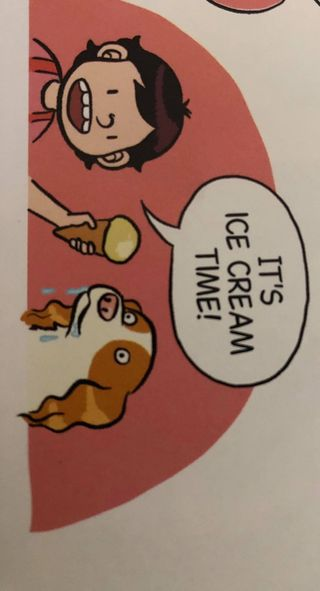

How To Make Ice Cream For Dogs And Hoomans
⚠️CONTAINS EGGS AND PEANUT BUTTER AND MAYBE SOME OTHER ALLERGIES SO CHECK INGREDIENTS FIRST!⚠️
Ingredients
Ice Cream
- 3 bananas
- 1/2 tbsp Honey
- 2 eggs
- 1 cup of low-fat coconut milk
- 1.5 TBSP of unsweetened peanut butter
- Ice cream cones!!! You can't have ice cream without cones!!
STUFF TO USE
- Stove (possibly?)
- Blender
- An ice cream scooper (or spoon)
- Pan with bigger sides than a normal pan for pancakes
EXTRA
Method
- 1. Slice the bananas and freeze overnight.
- 2. Put the pan on the stove and set it to gentle heat then pour the coconut milk into the pan and break the two eggs into the pan.
- 3. Whisk continuously for 7 minutes or until the custard thickens and coats the back of a spoon.
- 4. Grab your blender and pour in the custard, frozen bananas, 1/2 TBSP of honey and 1.5 TBSP of peanut butter.
- 5. Blend until smooth.
- 6. Freeze until firm.
- 7. Scoop ice cream into cone.
- 8.
Picture and recipe source from (book)- Pawcasso
